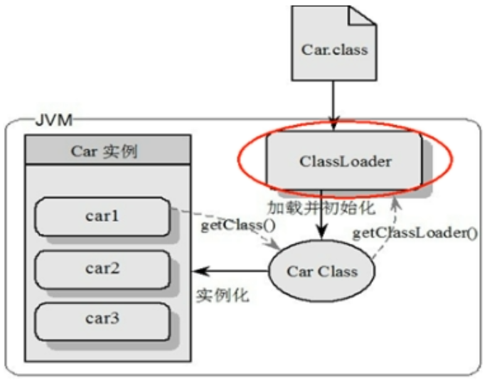
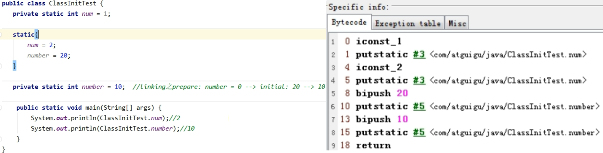
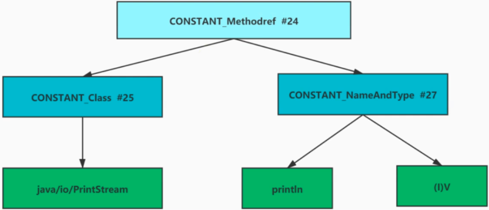

Java Virtual Machine，So Fascinating.
学习参考资料：
- 《深入理解 Java 虚拟机第 3 版》
- 宋红康 JVM 教程
一些工具：
- IDEA Plugin：
jclasslib Bytecode viewer
内存与垃圾回收
JVM 与 Java 体系结构
前言
The Java Virtual Machine is the cornerstone of the Java platform. It is the component of the technology responsible for its hardware- and operating system-independence, the small size of its compiled code, and its ability to protect users from malicious programs.
The Java Virtual Machine is an abstract computing machine. Like a real computing machine, it has an instruction set and manipulates various memory areas at run time. It is reasonably common to implement a programming language using a virtual machine.
For the sake of security, the Java Virtual Machine imposes strong syntactic and structural constraints on the code in a class file. However, any language with functionality that can be expressed in terms of a valid class file can be hosted by the Java Virtual Machine. Attracted by a generally available, machine-independent platform, implementors of other languages can turn to the Java Virtual Machine as a delivery vehicle for their languages.
JVM 的整体结构
Java 代码执行流程
JVM 的架构模型
Java 编译器输入的指令流基本上是一种基于栈的指令集架构。
基于栈式架构的特点：
- 设计和实现更简单，适用于资源受限的系统
- 避开了寄存器的分配难题：使用零地址指令方式分配
- 指令流中的指令大部分是零地址指令，其执行过程依赖于操作栈。指令集更小，编译器容易实现。
- 不需要硬件支持，可移植性更好，更好实现跨平台
1 | int i = 2; |
基于寄存器架构的特点：
- 典型的应用是 x86 的二进制指令集：比如传统的 PC 以及 Android 的 Davlik 虚拟机。
- 指令集架构则完全依赖硬件，可移植性差
- 性能优秀和执行更高效
- 花费更少的指令去完成一项操作
- 在大部分情况下，基于寄存器架构的指令集往往都以一地址指令、二地址指令和三地址指令为主，而基于栈式架构的指令集却是以零地址指令为主。
1 | // 2+3 |
反编译操作：javap -v test.class
JVM 的生命周期
虚拟机启动
- JVM 启动通过引导类加载器
bootstarp class loader创建一个初始类initial class来完成的，这个类由虚拟机的具体实现指定
- JVM 启动通过引导类加载器
虚拟机执行
- 一个运行中的 JVM 有一个清晰的任务：执行 Java 程序
- 执行一个所谓的 Java 程序，真真正正在执行的是一个叫做 JVM 的进程
- 打印 JVM 进程：
jps
虚拟机退出
- 程序正常执行结束
- 程序运行过程中遇异常/错误而异常中止
- 某线程调用 Runtime 或 System 的 exit/halt 方法，并且 Java 安全管理器也允许这次 exit/halt 操作
- 除此之外，JNI (Java Native Interface) 规范描述了用 JNI Invocation API 来加载/卸载 JVM 时，JVM 的退出情况
JVM 的发展历程
Sun Classic VM
- 第一款商用 JVM
- 只提供解释器，解释器和 JIT 编译器（外挂的）无法同时配合
- Hotspot 内置了此 VM
Exact VM
- Exact Memory Management 准确式内存管理，也可叫 Non-Conservative/Accurate Memory Management。虚拟机可知内存中某个位置的数据具体是什么类似（变量/引用）
- 具备现代高性能 VM 的雏形：热点探测、编译器和解释器混合工作模式、
- 只在 Solaris 平台短暂使用，最终被 Hotspot 替换
HotSpot VM
- 绝对的市场地位
- Oracle JDK / OpenJDK 默认虚拟机
- 热点代码探测技术
通过计数器找到最具编译价值代码，触发即时编译或栈上替换
通过编译器与解释器协同工作，在最优化的程序响应时间与最佳执行性能中取得平衡
JRocket（EBA 公司，该公司 08 年被 Oracle 收购）
- 专注于服务器端应用
不太关注程序启动速度，因此不包含解释器实现，全部代码靠即时编译器编译后执行 - JRocket JVM 是目前世界上最快的 JVM。70% 性能提升和 50% 硬件减少
- MissionControl 服务套件，以极低的开销来监控/管理/分析生产环境中的应用程序的工具
- 专注于服务器端应用
IBM 的 J9
- 市场定位于 HotSpot 接近
- 有影响力的三大商用虚拟机之一，号称世界上最快的 Java 虚拟机（在 IBM 机上）
- 17 年开源了 J9，为 OpenJ9，给 Eclipse 基金会
KVM 和 CDC/CLDC Hotspot
- Oracle 在 Java ME 产品线上的两个虚拟机 CDC/CLDC HotSpot Implemention VM
- 运行塞班系统上的 Java 手机游戏
TaobaoJVM
基于 OpenJDK 开发的定制版本 AlibabaJDK
创新的 GCIH (GC invisible heap) 技术实现了 off-heap，即将生命周期较长的 Java 对象从 heap 中移 heap 外，并且 GC 不能管理 GCIH 内部的 Java 对象，以此达到降低 GC 的回收频率和提升 GC 的回收效率的目的
GCIH 中的对象还能在多个 JVM 进程中共享
使用 crc32 志林实现 JVM intrinsic 降低 JNI 调用开销PMU hardware 的 Java profiling tool 和诊断协助功能
针对大数据场景的 ZenGC硬件严重依赖 intel CPU，损失了兼容性，但提高了性能
Dalvik VM
- Google 开发，没有遵循 JVM 规范，应用于 Android，并在 Android 2.2 中提供了 JIT，发展迅猛
- 基于寄存器架构
- 执行的是编译以后的 dex (Dalvik Executable) 文件，效率高
dex 文件可通过 Class 文件转化而来，通过 Java 语法编写应用程序，可直接使用大部分 Java API - Android 5.0 使用支持提前编译（Ahead Of Time Compilation，AOT）的 ART VM 替换 Dalvik VM
Graal VM
- 18 年，Oracle Labs 公开，号称 “Run Programs Faster Anywhere”
- 跨语言全栈虚拟机，可作为任何语言的运行平台使用，包括 C++、Python、R、Ruby、JavaScript 等
- 支持不同语言中混用对方的接口和对象，支持这些语言使用已经编写好的本地库文件
- 工作原理是将这些语言的源代码或源代码编译后的中间格式，通过解释器转换为能被 Graal VM 接受的中间表示。提供了 Truffle 工具集快速构建面向一种新语言的解释器。在运行时还能进行即时编译优化，获得比原生编译器更优秀的执行效率。
其他：Azul VM、Liquid VM、Apache Harmony、Microsoft JVM
类加载子系统
类加载器子系统：
加载字节码文件，使得其中的变量/方法等信息有组织地加载到内存
作用：负责从文件系统/网络中加载 Class 文件，只负责加载，至于是否可运行，由 Execution Engine 决定
三个阶段：
- 加载阶段
- 引导类加载器 BootStrap ClassLoader
- 扩展类加载器 Extension ClassLoader
- 系统类加载器 Application ClassLoader
- 链接阶段
- 验证 verify
- 准备 prepare
- 解析 resolve
- 初始化阶段
- 加载阶段
加载的类信息存放于一块称为方法区的内存空间。除了类的信息外，方法区中还会存放运行时常量池信息，可能还包括字符串字面量和数字常量（这部分常量信息是 Class 文件中的常量池部分的映射）
ClassLoader 角色
class file 存在于本地硬盘行，可以理解为设计师画在纸上的模板，而最终这个模板在执行的时候是要加载到 JVM 中来。根据这个模板实例化出 n 个一模一样的实例
class file 加载到 JVM 中，被称为 DNA 元数据模板，放在方法区
在
.class 文件->JVM->元数据模板过程中，ClassLoader 扮演快递员的角色
类的加载过程
Loading
- 通过一个类的全限定名获取定义此类的二进制字节流
- 本地系统
- 网络，比如 Web Applet
- zip 包（jar、war 格式的基础）
- 运行时计算生成，如动态代理
- 由其他文件生成，如 JSP
- 从专有数据库中提取 .class 文件，少见
- 从加密文件中获取，典型地防 Class 文件被反编译的措施
- 将这个字节流所代表的静态存储结构转换为方法区的运行时数据结构
- 在内存中生成一个代表这个类的 java.lang.Class 对象，作为方法区这个类的各种数据的访问入口
- 通过一个类的全限定名获取定义此类的二进制字节流
Linking
- 验证 Verify
- 目的在于确保 Class 文件的字节流中包含信息符合当前 VM 要求，保证被加载类的正确性，不会危害虚拟机自身安全
- 文件格式验证/元数据验证/字节码验证/符号引用验证
- 准备 Prepare
- 为变量分配内存并且设置该类变量的默认初始值，即零值。initial 阶段才会给 static 变量设置值
- 不包含用 final 修饰的 static，final 在编译的时候就会分配了，准备阶段会显式初始化
- 这里不会为实例变量分配初始化，类变量会分配在方法区中，而实例变量是会随着对象一起分配到 Java 堆中
- 解析 Resolve
- 将常量池内的符号引用转换为直接引用的过程
- 事实上，解析操作往往会伴随着 JVM 在执行完初始化之后再执行
- 符号引用就是一组符号用来描述所引用的目标。符号引用的字面量形式明确定义在《Java 虚拟机规范》的 Class 文件格式中。直接引用就是直接指向目标的指针、相对偏移量或一个间接定位到目标的句柄
- 解析动作主要是针对类或接口、字段、类方法、接口方法、方法类型等。对应常量池中的
CONSTANT_Class_info、CONSTANT_Fieldref_info、CONSTANT_Methodref_info等。
- 验证 Verify
Initial
执行类构造器方法
<clinit>()class init 的过程此方法不需定义，是 javac 编译器自动收集类中的所有类变量的赋值动作和静态代码块中的语句合并而来。如果没有静态变量和静态代码块的话就不生成
<clinit>()构造器方法中指令按语句在源文件中出现的顺序执行

<clinit>()不同于类的构造器
关联：构造器是虚拟机视角下的<init>()若该类具有父类，JVM 会保证子类的
<clinit>()执行前，父类的<clinit>()已经执行完毕虚拟机必须保证一个类的
<clinit>()方法是并发安全的
类加载器的分类
分类：
- JVM 支持两种类型的 ClassLoader
- 引导类加载器 BootStrap ClassLoader
- 自定义类加载器 User-Defined ClassLoader
定义：所有派生于抽象类 ClassLoader 的类加载器都为自定义类加载器，并不是字面上的指开发人员自定义的 ClassLoader
- 常见 ClassLoader 只有 3 个
- 下图中的四者是包含关系，不是上下层/继承关系
- BootStrap Class Loader 是 C/C++ 代码写的，其他是 Java
1 | // 获取系统类加载器 sun.misc.Launcher$AppClassLoader |
虚拟机自带的加载器：
- BootStrap ClassLoader
- C/C++ 实现，嵌套于 JVM
- 用来加载 Java 核心库（
JAVA_HOME/jre/lib/rt.jar、resources.jar或sun.boot.class.path路径下的内容） - 没有父加载器
- 加载扩展类和应用程序类加载器并制定为他们的父类加载器
- 安全考虑，Bootstrap ClassLoader 只加载报名为 java、javax、sun 等开头的类
- Extension ClassLoader
- Java 编写，由
sun.misc.Launcher$ExtClassLoader实现 - 派生于 ClassLoader 类
- 父类加载器为 BootStrap ClassLoader
- 从
java.ext.dirs系统属性所制定的目录中加载类库，或从 JDK 的安装目录的jre/lib/ext子目录下加载类库。若用户的 jar 放在此目录下，也会由其加载
- Java 编写，由
1 | // 获取 BootStrapClassLoader 能够加载的 api 的路径 |
用户自定义类加载器：
why?
隔离加载类
修改类加载的方式
拓展加载源
防止源码泄露步骤
继承 java.lang.ClassLoader
JDK1.2 之前要重写 loadClass() 方法，之后不建议重写 loadClass() 方法，而是建议把自定义的类加载逻辑写在 findClass() 方法中
1
2
3
4
5
6
7
8
9
10
11
12
13
14
15
16public class CustomClassLoader extends ClassLoader {
@Override
protected Class<?> findClass(String name) throws ClassNotFoundException {
try {
byte[] result = getClassFromCustomPath(name);
// ...
} catch (FileNotFoundException e) {
e.printStackTrace();
}
}
private byte[] getClassFromCustomPath(String name) {
// 从自定义路径中加载指定类
// 可以包含加密和解密的过程
}
}若没有太过复杂的需求，可直接继承 URLClassLoader，这样可避免自己去编写 findClass() 方法及其获取字节码流的方式，使自定义类加载器编写更加简洁
关于 ClassLoader：
获取 ClassLoader 的途径：
- 获取当前类的 ClassLoader：
clazz.getClassLoader() - 获取当前线程上下文的 ClassLoader：
Thread.currentThread().getContextClassLoader() - 获取系统的 ClassLoader：
ClassLoader.getSystemClassLoader() - 获取调用者的 ClassLoader：
DriverManger.getCallerClassLoader()
双亲委派机制
JVM 对 class 文件采用的是按需加载的方式，也就是说当需要使用该类时才会将它的 class 文件加载到内存生成 class 对象。而且加载某个类的 class 文件时，JVM 虚拟机采用的是双亲委派模式，即把请求交由父类处理。
工作原理：
- 如果一个类加载器收到了类加载请求，它并不会自己先加载，而是将请求委托给父类的加载器去执行
- 如果父类加载器还存在其父类加载器，则进一步向上，请求最终到达顶层的 BootStrap ClassLoader
- 如果父类加载器可以完成类加载，则返回，或者子加载器才会尝试自己去加载
好处：
- 避免类的重复加载
- 保护程序安全，防止核心 API 被随意篡改
java.lang.SecurityException: Prohibited package name: java.lang
沙箱安全机制：自定义一个 String 类，加载时会使用引导类加载器，加载过程中会先加载 JDK 的文件 rt.jar 下的 java\lang\String.class 此时自定义 String.class 的 main 方式就会找不到
JVM 视角中两个 class 对象为同一个类的条件：
- 全限定类名相同
- 加载这个类的 ClassLoader 实例对象相同
对类加载器的引用：
- JVM 必须知道一个类型是 BootStrap ClassLoader 加载还是自定义 ClassLoader 加载的。
- 如果一个类型是由用户类加载器加载，JVM 会讲这个类加载器的一个引用作为类型信息的一部分保存在方法区中
- 当解析一个类型到另一个类型的引用时，JVM 需要保证这两个类型的类加载器是相同的。
类的主动使用（除了以下，其他都是被动使用，不会导致类的初始化）：
- 创建类的实例
- 访问某个类或接口的静态变量，或者对该静态变量赋值
- 调用类的静态方法
- 反射
- 初始化一个类的子类
- JVM 启动时被标明为启动类的类
- JDK7 开始提供的动态语言支持：
java.lang.invoke.MethodHandle 实例的解析结果
RET_getStatic、REF_putStatic、REF_invokeStatic 句柄对应的类没有初始化
运行时数据区
概述与线程
运行时数据区：
- 红色部分（堆、堆外内存 (永久代或元空间、代码缓存)）：JVM 定义了若干种程序运行期间会使用到的运行时数据区，其中有一些会随着虚拟机启动而创建，随着虚拟机退出而销毁
- 灰色部分（程序计数器、栈、本地栈）：则是与线程一一对应，随线程开始/结束而创建/销毁
更细致的：
线程：Java 线程与 OS 线程一一对应
JVM 系统线程：
- 虚拟机线程：JVM 到达安全点才会出现。执行类型包含 “stop-the-world” 的垃圾收集，线程栈收集，线程挂起，以及偏向锁撤销
- 周期任务线程：这种线程是时间周期时间的体现（比如中断），他们一般用于周期性操作的调度执行
- GC 线程：对在 JVM 里不同种类的垃圾收集行为提供了支持
- 编译线程：在运行时会将字节码编译成本地代码
- 信号调度线程：接收信号并发送给 JVM，在它内部通过调用适当的方法进行处理
程序计数器
- PC 寄存器用来存储指向下一条指令的地址，由 Execution Engine 读取下一条指令。
- 它是一块很小的内存，几乎可以忽略不计，也是运行速度最快的内存
- JVM 规范中，每个线程都有它自己的 PC Register，是线程私有的，生命周期与线程的生命周期保持一致
- 任何时间一个线程都只有一个方法在执行，也就是所谓的当前方法。程序计数器会存储当前线程正在执行的 Java 方法的 JVM 指令地址；若是在执行 native 方法，则是未指定值 undefined
- 它是程序控制流的指示器，分支、循环、跳转、异常处理、线程恢复等基础功能都需要依赖它
- 字节码解释器工作时就是通过改变这个计数器的值来选取下一条需执行的字节码指令
- 是唯一一个在 JVM 规范中没有规定任何 OOM 情况的区域
- Stack Area 和 PC Registers 都没有 GC
虚拟机栈 ★
Java Virtual Machine Stack：
起因：跨平台性设计，JVM 指令根据栈来设计。
每个线程创建时都会创建一个虚拟栈，其内部保存一个个的栈帧 Stack Frame，对应一次次的 Java Method Invoke
生命周期与线程一致
作用：保存方法的局部变量（8 种基本数据类型、对象的引用地址）、部分结果，并参与方法的调用和返回
JVM 直接对 Java 栈的操作：
- 方法执行，伴随着压栈
- 执行结束后的弹栈
不存在垃圾回收
栈中可能的异常：
JVM 规范允许 Java 栈的大小是动态的或者是固定不变的
若采用固定大小的 JVM 栈，那每个 Thread 的 JVM Stack 容量在创建时独立选定。若线程请求分配的栈容量超过 JVM 设置，则抛 StackOverflowError 异常
若采用动态扩展，在扩展时发现不足了则抛 OutOfMemoryError
-Xss256k、-Xss1024k 可以设置栈大小
栈帧的内部结构：
- 局部变量表 LV, Local Variables
- 操作数栈 OS, Operand Stack
- 动态链接 DL, Dynami Linking，指向运行时常量池的方法引用
- 方法返回地址 RA, Return Address，方法退出的定义
- 一些附加信息
局部变量表：
也称为局部变量数组、本地变量表
定义为一个数字数组，主要存储方法 参数和定义在方法体内的局部变量，数据类型包括各类基本数据类型、Object Reference、returnAddress
是线程的私有数据，不存在数据安全问题
容量大小是编译器确定下来的，保存在方法的 Code 属性的 maximum local variables 数据项中。方法运行期间是不会改变局部变量表大小的。
最基本的存储单元：Slot（变量槽）
参数值的存放总是在局部变量数组的 index0 开始，到数组长度-1 的索引结束
32 位以内的类型只占用一个 slot（包括 returnAddress 类型），64 位的类型（long/double）占用两个 slot

如果当前帧由构造方法或实例方法创建，那 this 变量会存放在 index=0 的 slot 处，其他参数按按照参数表顺序排列
[this, param, localVariable]Slot 重复利用：
栈帧中的局部变量表中的槽位是可重用的，如果一个局部变量过了其作用域，那么在作用域后新声明的局部变量就可能复用过期局部变量的槽位1
2
3
4
5
6
7void test() {
{
int a = 2;
System.out.println(2);
}
int b = 3;
}
局部变量和静态变量对比
- 静态变量有 2 次初始化机会，prepare 和 initial
- 局部变量表则不存在系统初始化过程，意味着一旦定义了局部变量则必须人为的初始化，否则无法使用。
int i; System.out.println(i); // CE
操作数栈：
- 方法执行过程中，根据字节码指令，往栈中写入数据或提取数据，即 push/pop。比如：执行 复制/交换/求和 等操作
- 保存计算过程中的中间结果，同时作为计算过程中变量的临时存储空间
- 如果被调用的方法带有返回值的话，其返回值将会被压入当前栈帧的操作数栈中
栈顶缓存技术 Top-of-Stack Cashing：
- 栈式结构的 JVM 所使用的零地址指令更加紧凑，完成一项操作伴随着很多的入栈和出栈操作，即意味着更多的指令分派 instruction dispatch 次数和内存读写次数。
HotSpot JVM 考虑将栈顶元素全部缓存到物理 CPU 的寄存器而不是内存中，以此降低对内存的读写次数，提高执行引擎的执行效率
动态链接（指向运行时常量池的方法引用）：
- 帧数据区：方法返回地址、动态链接、附加信息
- 每个栈帧内部都包含一个指向运行时常量池中该栈帧所属方法的引用，包含这个引用的目的就是为了支持当前方法的代码能够实现动态链接 Dynamic Linking。比如 invokedynamic 指令
- 在 Java 源文件被编译到字节码文件中时，所有的变量和方法引用都作为符号引用 Symbolic Reference 保存在 class 文件的常量池中。比如：描述一个方法调用其他方法时，就是通过常量池中指向方法的符号引用来表示的。
- 动态链接作用：将这些符号引用转换为调用方法的直接引用
- 使用体现：bytecode 里面的
#1、#2之类的 - 常量池作用：提供一些符号和变量，便于指令的识别
方法的调用（解析与分派）：
JVM 中，符号引用转换为调用方法的直接引用与方法的绑定机制相关
静态链接：被调用的目标方法在编译期可知，且运行期保持不变时，将调用方法的符号引用转换为直接引用的过程
invokespecial、invokestatic
动态链接：被调用方法在编译器无法确定，只能再运行时将调用方法的符号引用转换为直接引用invokevirtual、invokeinterface推广一下 => 早期绑定 Early Binding、晚期绑定 Late Binding
绑定是一个字段、方法或类在符号引用被替换为直接引用的过程，仅发生一次非虚方法（静态方法/私有方法/final方法/构造器/父类方法）与虚方法
- 普通调用指令：
invokespecial（非虚方法）：调用静态方法，解析阶段确定唯一方法版本invokestatic（非虚方法）：调用方法、私有及其父类方法，解析阶段确定唯一方法版本 invokevirtual：调用所有虚方法invokeinterface：调用接口方法
- 动态调用指令
invokedynamic：动态解析出需要调用的方法，然后执行
Java7 增加的指令，是 Java 为实现【动态类型语言】支持而做的一种改进（本质是对 JVM 规范的修改，最直接受益者是运行在 JVM 的动态语言的编译器），但在 Java7 中并没有提供直接生成 invokedynamic 指令的方法，需要借助 ASM 等工具，直到 Java8 中 Lambda 的出现。
- 普通调用指令：
动态语言和静态语言：
- 区别在于对类型的检查是编译期还是运行期
- 静态类型语言是判断变量的类型信息，动态类型语言则是判断变量值的类型信息
方法重写的本质（动态分派）：
- （调用之前，方法的对象/类在栈顶）找到操作数栈的栈顶元素所执行的对象的实际类型，记作 C
- 先在类型 C 中找到与常量中描述符合、简单名称符合的方法，并进行访问权限校验（通过则返回这方法的直接引用，不通过则返回
java.lang.IllegalAccessError异常） - 若没有找到符合的方法，则按照继承关系从下往上对 C 的各个父类依次执行操作 3
- 最终没找到合适方法，则抛出
java.lang.AbstractMethodError异常
虚方法表 virtual method table：
- OOP 中，动态分派的使用是很频繁的，为了提高性能，JVM 在类的方法区建立了一个虚方法表，使用索引代替查找，表中存放各个方法的实际入口
- 虚方法表会在类加载的 Linking 阶段被创建并开始初始化，类的变量初始值准备完成后，JVM 会把该类的方法表也初始化完毕
方法返回地址：
方法开始执行后，仅两种方式退出该方法
正常完成出口：执行引擎遇到任一个方法返回的字节码指令，将返回值传递给上层方法调用者
- ireturn (boolean、byte、char、short、int)
- lreturn
- freturn
- dreturn
- areturn
- return (void、构造器、类和接口初始化)
异常完成出口（没有返回值给上层调用者）：方法执行过程中遇到了异常，异常没有在方法内处理，导致方法退出
方法执行过程中抛出异常时的异常处理，存储在一个异常处理表中，方便在发生异常时找到处理异常的代码，如下，PC: 4->8 范围发生的异常可以跳 PC=111
2
3Exception table:
from to target type
4 8 11 Class java/io/IOException本质上，方法的退出即当前栈帧出栈的过程。此时需要恢复上层方法的局部变量表、操作数栈、将返回值压入调用者栈的操作数栈、设置 PC 等
一些附加信息：
- 栈帧中还允许携带与 JVM 实现相关的一些附加信息。例如对程序调试提供支持的信息
本地方法接口
Native Method：
一个 Java 调用非 Java 代码接口。很多 PL 都有这一机制，比如 C++ 中的
extern "C"告知 C++ Compiler 去调 C 的函数。融合不同的编程语言为 Java 所用，初衷是融合 C/C++ 程序
可与除 abstarct 外的关键字共用
why: 有些功能用 Java 实现不容易或效率不高
now: 目前使用的越来越少，除非是与硬件有关的应用
本地方法栈
Native Method Stack:
线程私有
虚拟机栈管理 Java 方法调用，本地方法栈管理本地方法调用
某个线程调用一个本地方法时，它进入一个全新且不受 VM 限制的世界，和 VM 有同样的权限
- 可通过本地方法接口来访问虚拟机内的运行时数据区
- 甚至可以直接使用本地处理器中的寄存器
- 直接从本地内存的堆中分配任意数量的内存
并不是所有 JVM 都支持 Native Method，因为 JVM 规范没明确要求 Native Method Stack 的使用语言、具体实现、数据结构等
在 Hotspot JVM 中，直接将本地方法栈和虚拟机栈合二为一
堆 ★
Heap 概述：
一个 JVM 实例只存在一个堆内存，JVM 启动时创建并确定空间大小（可人为调节），是 Java 内存管理的核心区域，也是 JVM 管理的最大块内存空间
所有线程共享 Java 堆，在此还划分了线程私有的缓冲区（Thread Local Allocation Buffer，TLAB）
《Java 虚拟机规范》：堆可处于物理上不连续的空间，但逻辑上是连续的
《Java 虚拟机规范》：（几乎）所有的对象实例以及数组都应当在运行时分配在堆上。（栈帧中保存其引用）
The heap is the run-time data area from which memory for all class instances and arrays is allocated方法结束后，堆中的对象不会马上被移除，GC 时才会被移除
内存细分：
现代 GCer 大部分基于分代收集理论设计
Java 7 之前，堆内存逻辑上分为：
- 新生区(代)，Young (New) Generation Space，又分为 Eden 区和 Survivor 区
存放生命周期较短的瞬时对象，这类对象的创建和消亡都很迅速（IBM 研究表明，新生代中 80% 的对象都是 “朝生夕死”） - 养老区(代)，Tenure (Old) Generation Space
存放生命周期较长的对象（这些对象在某些极端情况还能与 JVM 生命周期一致） - 永久区(代)，Permanent (Perm) Space
- 新生区(代)，Young (New) Generation Space，又分为 Eden 区和 Survivor 区
Java 8 及之后，堆内存逻辑上分为：
- 新生代，Young (New) Generation Space，又分为 Eden 区和 Survivor 区
- 老年代，Tenure (Old) Generation Space
- 元空代，Meta Space

设置堆空间：
-Xms初始堆内存 （Young + Tenure 代）；Runtime.getRuntime().totalMemory；默认值：内存 / 64。-Xmx堆区最大内存；Runtime.getRuntime().maxMemory 会输出堆内存减 S0 或 S1 区的内存，因为这两个区只能选一个存，另一个是用来辅助 GC 的；默认值：内存 / 4-XX:+PrintGCDetails打印 GC 详情，或者在命令行jstat -gc 进程号-XX:NewRatio=2表示配置新生代和老年代的占比，此时是新生代占 1，老年代占 2（默认就是 2）-XX:SurvivorRatio=8配置 Eden 和 Survivor 区比例，此时 Survivor 区是 1，Eden 区是 8-XX:-UseAdaptiveSizePolicy：关闭自适应内存分配策略-XX:+UseAdaptiveSizePolicy：打开自适应内存分配策略（默认）
对象分配过程（内存分配和内存回收是严谨且相关的）：
- new 的对象先放伊甸园区，此区有大小限制。
- 当伊甸园的空间填满时，程序又需要创建对象，JVM 的垃圾回收器将对伊甸园区进行 Minor GC，将伊甸园区中的不再被其他对象所引用的对象进行销毁。再加载新的对象放到伊甸园区
- 然后将伊甸园中的剩余对象移动到 Survivor 0 区。
- 如果再次触发垃圾回收，此时上次幸存下来的放到 Survivor 0 区的，如果没有回收，就会放到 Survivor 1 区
- 如果再次经历垃圾回收，此时会重新放回 Survivor 0 区，接着再去 Survivor 1 区
- 啥时候能去养老区呢？可以设置次数。默认是15次。 可
-XX: MaxTenuringThreshold<N>进行设置。 - 在养老区，相对悠闲。当养老区内存不足时，触发 Major GC，进行养老区的内 存清理
- 若养老区执行了 Major GC 之后发现依然无法进行对象的保存，就会产生 OOM
进度：72 -
方法区 ★
直接内存
执行引擎
StringTable
垃圾回收
垃圾回收概述
垃圾回收相关算法
垃圾回收相关概念
垃圾回收器
字节码与类的加载
Class 文件结构
重要的官方文档：https://docs.oracle.com/javase/specs/jvms/se8/html/jvms-4.html
前置知识
Java 前端编译器：
- javac 是一种能够将 Java 源码编译为字节码的前端编译器。
- HotSpot VM 并没强制要求前端编译器只能 javac。只要编译结果符合 JVM 规范即可。
- 除了 javac (全量式编译) 之外，还有内置在 Eclipse 中的 ECJ（Eclipse Compiler for Java）编译器，是一种增量式编译器。
- Ctrl+S 后，ECJ 编译器把未编译部分的源码逐行进行编译，而非每次都全量编译。
- ECJ 不仅是 Eclipse 的默认内置前端编译器，在 Tomcat 中同样也是使用 ECJ 编译器来编译 jsp 文件。
- ECJ 基于 GPLv2 开源。
- 默认情况下，Intellij IDEA使用 javac 编译器（可自己设置为 ajc）
- 前端编译器并不会直接涉及编译优化等方面的技术，这些具体优化细节移交给 HotSpot 的 JIT 编译器负责。
涉及字节码指令的代码细节举例：
1 | public class IntegerTest { |
Class 类的本质：
- 任一个 Class 文件都对应着唯一一个类或接口的定义信息，但反过来说，Class 文件实际并不一定以磁盘文件的形式存在。
- Class 文件是一组以字节为单位的二进制流
Class 文件格式及其总体结构：
- Class 的结构不像 XML 等描述语言，它没有任何分隔符号，所以在其中的数据项都是严格限定的，字节的含义、长度、先后，都不允许改变。
- Class 文件格式采用一种类似于 C 语言结构体的方式进行数据存储，这种结构中只有两种数据类型
- 无符号数：基本的数据类型，以 u1、u2、u4、u8 来分别代表指定字节的无符号数
可用来描述 数字、索引引用、数量值、UTF-8 字符串值。 - 表：由多个无符号数或者其他表作为数据项构成的复合数据类型
所有表都习惯性地以_info结尾。
用于描述有层次关系的复合结构的数据，整个Class文件本质上就是一张表。
表没有固定长度，所以通常会在其前面加上个数说明
- 无符号数：基本的数据类型，以 u1、u2、u4、u8 来分别代表指定字节的无符号数
1 | ClassFile { |
魔数
- 每个 Class 文件开头的 4 个字节的无符号整数称为 Magic Number
- 它的唯一作用是确定这个文件是否为一个能被虚拟机接受的有效合法的 Class 文件。
即：魔数是Class文件的标识符。 - 使用魔数而不是扩展名来进行识别主要是基于安全方面的考虑，因为文件扩展名可以随意地改动。
- 魔数值固定为 0xCAFEBABE。不会改变。
- 如果一个 Class 文件不以 0xCAFEBABE 开头，虚拟机在进行文件校验的时候就会直接抛出以下错误：
Error: A JNI error has occurred, please check your installation and try again Exception in thread "main" java.lang.ClassFormatError: Incompatible magic value 1885430635 in class file Test
Class 文件版本
- 紧接着魔数的 4 个字节存储的是 Class 文件的版本号。同样也是4个字节。第 5 个和第 6 个字节所代表的含义就是编译的副版本号 minor_version，而第 7 个和第 8 个字节就是编译的主版本号 major_version。
- 它们共同构成了 class 文件的格式版本号。譬如某个 Class 文件的主版本号为 M，副版本号为 m，那么这个 Class 文件的格式版本号就确定为 M.m。
- 向下兼容：高版本兼容低版本。低版本执行高版本则会抛
java.lang.UnsupportedClassVersionError
版本号与平台的对应：
| 主版本（十进制） | 副版本（十进制） | 编译器版本 |
|---|---|---|
| 45 | 3 | 1.1 |
| 46 | 0 | 1.2 |
| 47 | 0 | 1.3 |
| 48 | 0 | 1.4 |
| 49 | 0 | 1.5 |
| 50 | 0 | 1.6 |
| 51 | 0 | 1.7 |
| 52 | 0 | 1.8 |
| 53 | 0 | 1.9 |
| 54 | 0 | 1.10 |
| 55 | 0 | 1.11 |
常量池 constant_pool
概述：
- 常量池是 Class 文件中内容最为丰富的区域之一。常量池对于 Class 文件中的字段和方法解析也有着至关重要的作用。
- 随着 JVM 的不断发展，常量池的内容也日渐丰富。可以说，常量池是整个 Class 文件的基石。
- 在版本号之后，紧跟着的是常量池的数量，以及若干个常量池表项。
- 常量池中常量的数量是不固定的，所以在常量池的入口需要放置一项 u2 类型的无符号数，代表常量池容量计数值（constant_pool_count）。与 Java中语言习惯不一样的是，这个容量计数是从1而不是0开始的。
- 常量池表项中，用于存放编译时期生成的各种字面量和符号引用，这部分内容将在类加载后进入方法区的运行时常量池中存放。
常量池计数器：
u2 类型，2 个字节，constant_pool_count=1 时表示常量池有 0 个常量项（没有常量项）
若为 0x16 = 22，表示有 21 个常量项，索引范围是
1-21把第 0 项常量空出来，是为了适配一种情况：某些指向常量池的索引值要表达 “不引用任何一个常量池项目” 的语义。此时这种情况即可用索引值 0 来表示。
常量池项类型及其结构细节：
常量池主要存放两大类常量
- 字面量（Literal）：文本字符串、final 的变量
String str=“atguigu”; final int NUM=10; - 符号引用（Symbolic References）：类和接口的全限定名、字段的名称和描述符、方法的名称和描述符
- 字面量（Literal）：文本字符串、final 的变量
术语
全限定名
java/lang/String;简单名称
指没有类型和参数修饰的方法或者字段名称，如 add() 方法和 num 字段的简单名称分别是 add 和 num描述符
描述字段的数据类型、方法的参数列表（包括数量、类型以及顺序）和返回值。具体如下：标志符 含义 B 基本数据类型 byte C 基本数据类型 char D 基本数据类型 double F 基本数据类型 float I 基本数据类型 int J 基本数据类型 long S 基本数据类型 short Z 基本数据类型 boolean V 代表 void 类型 L 对象类型，比如： Ljava/lang/Object;[ 数组类型，代表一维数组。比如： double[][][] is [[[D用描述符描述方法：
toString()方法的描述符() Ljava/lang/String;；int abc(int[] x, int y)方法的描述符为([II) I
常量池里的每个项都符合以下某种类型及其细节（第 1 个字节 tag 作为类型标记，用于确定该项是以下的哪个）
一个例子：
总结：
- final 常量直接显示值，没用指向索引
- byte,short,char,boolean 标志为 3 的 CONSTANT_Integer_info 常量
- 在常量池列表中，CONSTANT_Utf8_info 常量项是一种使用改进过的 UTF-8 编码格式来存储诸如文字字符串、类或者接口的全限定名、字段或者方法的简单名称以及描述符等常量字符串信息
- 常量池可以理解为 class 文件之中的资源仓库，它是 Class 文件结构中与其他项目关联最多的数据类型（后面的很多数据类型都会指向此处），也是占用 Class 文件空间最大的数据项目之一
常量池中为什么要包含这些内容：
- Java 代码在进行 Javac 编译的时候，并不像 C/C++ 那样有链接这一步骤，而是在虚拟机加载 Class 文件的时候进行动态链接
- 也就是说，Class 文件不会保存各个方法、字段的最终内存布局信息，因此这些字段、方法的符号引用不经过运行期转换的话无法得到真正的内存入口地址，也就无法直接被虚拟机使用。当虚拟机运行时，需要从常量池获得对应的符号引用，再在类创建时或运行时解析、翻译到具体的内存地址之中
访问标志 access_flag
- 2 个字节，用于识别一些类或者接口层次的访问信息，包括：
- Class 是类还是接口
- 是否定义为 public 类型
- 是否定义为 abstract 类型
- 类的话，是否为 final
- 类的各个访问权限为 ACC_ 开头的常量，位与的运算结构作为 access_flag
比如，若是 public final 的类，则该标记为 ACC_PUBLIC | ACC_FINAL
| 标志名称 | 标志值 | 含义 |
|---|---|---|
| ACC_PUBLIC | 0x0001 | 标志为public类型 |
| ACC_FINAL | 0x0010 | 标志被声明为final，只有类可以设置 |
| ACC_SUPER | 0x0020 | 标志允许使用 invokespecial 字节码指令的新语义，JDK1.0.2 之后编译出来的类的这个标志默认为真。（使用增强的方法调用父类方法）；使用 ACC_SUPER 可以让类更准确地定位到父类的方法 super.method()，现代编译器都会设置并且使用这个标记。 |
| ACC_INTERFACE | 0x0200 | 标志这是一个接口 |
| ACC_ABSTRACT | 0x0400 | 是否为abstract类型，对于接口或者抽象类来说，次标志值为真，其他类型为假 |
| ACC_SYNTHETIC | 0x1000 | 标志此类并非由用户代码产生（即：由编译器产生的类，没有源码对应） |
| ACC_ANNOTATION | 0x2000 | 标志这是一个注解 |
| ACC_ENUM | 0x4000 | 标志这是一个枚举 |
补充说明：
- 带有 ACC_INTERFACE 标志的 class 文件表示的是接口而个是类，反之则表示的是类而个是接口
- 如果一个 class 文件被设置了 ACC_INTERFACE 标志，那么同时也得设置 ACC_ABSTRACT 标志。同时它不能再设置 ACC_FINAL、ACC_SUPER 或 ACC_ENUM 标志
- 如果没有设置 ACC_INTERFACE 标志，那么这个 class 文件可以具有上表中除 ACC_ANNOTATION 外的其他所有标志。当然，ACC_FINAL 和 ACC_ABSTRACT 这类互斥的标志除外。这两个标志不得同时设置。(注解是 @interface)
- ACC_SUPER 用于确定类/接口里面的 invokespecial 指令使用的是哪一种执行语义。针对 JVM 指令集的编译器都应当设置这个标志。对于 JavaSE8 及后续版本来说，无论 class 文件中这个标志的实际值是什么，也不管 class 文件的版本号是多少，Java 虚拟机都认为每个 class 文件均设置了 ACC_SUPER 标志。
- ACC_SUPER 是为了向后兼容由旧 Java 编译器所编译的代码而设计的。目前的 ACC_SUPER 标志在由 JDK1.0.2 之前的编译器所生成的 access flags 中是没有确定含义的，如果设置了该标志，那么 Oracle的Java 虚拟机实现会将其忽略
- ACC_SYNTHETIC 标志意味着该类或接口是由编译器生成的，而不是由源代码生成的
- 注解类型必须设置 ACC_ANNOTATION 标志。如果设置了 ACC_ANNOTATION 标志，那么也必须设置 ACC_ INTERFACE 标志。(注解是 @interface)
- ACC_ENUM 标志表明该类或其父类为枚举类型
类索引、父类索引、接口索引集合
- 在访问标记后，会指定该类的类别、父类类别以及实现的接口，格式如下：
1 | u2 this_class; // 类索引 |
- 类索引 this_class
- 字节无符号整数，指向常量池的索引
- 父类索引 super_class
- 2 字节无符号整数，指向常量池的索引
若没有继承类，其默认继承的是 java/lang/Object 类 - superclass 指向的父类不能是 final
- 2 字节无符号整数，指向常量池的索引
- 接口计数器 interfaces_count
- 接口索引集合 interfaces[]
- interfaces[] 中每个成员的值必须是对常量池表中某项的有效索引值，它的长度为 interfaces_count。每个成员 interfaces[i] 必须为 CONSTANT_Class_info 结构，各成员所表示的接口顺序和对应的源代码中给定的接口顺序（从左至右）一样
字段表集合
fields：
- 用于描述接口或类中声明的变量。包括类级变量以及实例级变量，但是不包括 local variables
- 字段叫什么名字、字段被定义为什么数据类型，这些都是无法固定的，只能引用常量池中的常量来描述。
- 它指向常量池索引集合，它描述了每个字段的完整信息。
比如字段的标识符、访问修饰符、static 修饰符、final修饰符等
注意：
- 字段表集合中不会列出从父类或者实现的接口中继承而来的字段
但可能列出原本 Java 代码不存在的字段。譬如在内部类中为了保持对外部类的访问性，会自动添加指向外部类实例的字段。 - 在 Java 中字段无法重载，两个字段的数据类型、修饰符不管是否相同，都必须使用不一样的名称
但是于字节码来讲，若两个字段的描述符不一，那字段重名合法。
字段表：
fields 表中的每个成员都必须是一个 fields_info 结构的数据项，用于表示当前类或接口中某个字段的完整描述
一个字段的信息包括如下这些信息，各个修饰符都是布尔值
- 作用域（public、private、protected 修饰符）
- 实例变量还是类变量（static 修饰符）
- 可变性（final）
- 并发可见性（volatile 修饰符，是否强制从主内存读写）
- 可否序列化（transient 修饰符）
- 字段数据类型（基本数据类型、对象、数组）
- 字段名称
结构
u2，access_flags，访问标志
u2，name_index，字段名索引
u2，descriptor_index，描述符索引
u2，attributes_count，属性计数器
attribute_info，attributes[attributes_count]，属性表集合
一个字段还可能拥有一些属性，用于存储更多的额外信息。比如初始化值、一些注释信息等。属性个数存放在attribute_count 中，属性具体内容存放在 attributes 数组中。
以常量属性为例（更多的属性下文会统一提及），结构为：1
2
3
4
5ConstantValue_attribute{
u2 attribute_name_index；
u4 attribute_length； // 对于常量属性而言，attribute_length=2
u2 constantvalue_index；
}
字段表访问标志：
| Flag Name | Value | Interpretation |
|---|---|---|
ACC_PUBLIC | 0x0001 | Declared public; may be accessed from outside its package. |
ACC_PRIVATE | 0x0002 | Declared private; usable only within the defining class. |
ACC_PROTECTED | 0x0004 | Declared protected; may be accessed within subclasses. |
ACC_STATIC | 0x0008 | Declared static. |
ACC_FINAL | 0x0010 | Declared final; never directly assigned to after object construction (JLS §17.5). |
ACC_VOLATILE | 0x0040 | Declared volatile; cannot be cached. |
ACC_TRANSIENT | 0x0080 | Declared transient; not written or read by a persistent object manager. |
ACC_SYNTHETIC | 0x1000 | Declared synthetic; not present in the source code. |
ACC_ENUM | 0x4000 | Declared as an element of an enum. |
方法表集合
methods：
- 指向常量池索引集合，它完整描述了每个方法的签名。
- 在字节码文件中，每一个 method_info 项都对应着一个类或者接口中的方法信息
比如方法的访问修饰符（public、private 或 protected），方法的返回值类型以及方法的参数信息等。 - 如果这个方法不是抽象的或者不是 native 的，那么字节码中会体现出来。
- methods 表只描述当前类或接口中声明的方法，不包括从父类或父接口继承的方法
- methods 表有可能会出现由编译器自动添加的方法，最典型的便是编译器产生的方法信息
比如：类/接口初始化方法和实例初始化方法 - 方法签名一样返回值不一样的方法，java不允许。但 class 文件允许
方法表：
- methods 表中的每个成员都必须是一个 method_info 结构，用于表示当前类或接口中某个方法的完整描述。
如果某个 method_info 结构的 access_flags 项既没有设置 ACC_NATIVE 标志也没有设置 ACC_ABSTRACT 标志，那么该结构中也应包含实现这个方法所用的Java虚拟机指令。 - method_info 结构可以表示类和接口中定义的所有方法，包括实例方法、类方法、实例初始化方法和类或接口初始化方法
- 结构：跟字段表一样，即
- u2，access_flags，访问标志
- u2，name_index，字段名索引
- u2，descriptor_index，描述符索引
- u2，attributes_count，属性计数器
- attribute_info，attributes[attributes_count]，属性表集合
方法表访问标志：
| 标志名称 | 标志值 | 含义 |
|---|---|---|
ACC_PUBLIC | 0x0001 | Declared public; may be accessed from outside its package. |
ACC_PRIVATE | 0x0002 | Declared private; accessible only within the defining class. |
ACC_PROTECTED | 0x0004 | Declared protected; may be accessed within subclasses. |
ACC_STATIC | 0x0008 | Declared static. |
ACC_FINAL | 0x0010 | Declared final; must not be overridden (§5.4.5). |
ACC_SYNCHRONIZED | 0x0020 | Declared synchronized; invocation is wrapped by a monitor use. |
ACC_BRIDGE | 0x0040 | A bridge method, generated by the compiler. |
ACC_VARARGS | 0x0080 | Declared with variable number of arguments. |
ACC_NATIVE | 0x0100 | Declared native; implemented in a language other than Java. |
ACC_ABSTRACT | 0x0400 | Declared abstract; no implementation is provided. |
ACC_STRICT | 0x0800 | Declared strictfp; floating-point mode is FP-strict. |
ACC_SYNTHETIC | 0x1000 | Declared synthetic; not present in the source code. |
属性表集合
附加属性：
- 紧随于方法表之后的 Class 字节码结构项，描述类的属性
是 class 文件所携带的辅助信息
比如该 class 文件的源文件名、以及任何带有 RetentionPolicy.CLASS 或 RetentionPolicy.RUNTIME 的注解。这类信息通常被用于 JVM 的验证和运行，以及 Java 程序的调试，一般无须深入了解
属性概述：
- 字段表、方法表都可以有自己的属性表。用于描述某些场景专有的信息
- 属性表集合的限制没有那么严格，不要求各个属性具有严格的顺序，只要不与已有属性名重复，任何人实现的编译器都可以向属性表中写入自己定义的属性信息，但 Java 虚拟机运行时会忽略掉它不认识的属性。
属性的通用结构（所有的属性都可以抽象成以下 3 部分，由属性名索引区别具体的属性）：
1 | attribute_info { |
JVM 预定义的属性举例（Java 8 定义了 23 种）：
| 属性名 | 存在于 | 解释 |
|---|---|---|
| Code | 方法表 | Java 代码编译成的字节码指令 |
| ConstantValue | 字段表 | final 关键字定义的常量池 |
| Deprecated | 类, 方法, 字段表 | 被声明为 deprecated 的方法和字段 |
| Exceptions | 方法表 | 方法抛出的异常 |
| EnclosingMethod | 类 | 仅当一个类为局部类或者匿名类时次有这个属性，用于标识这个类所在的外围方法 |
| InnerClass | 类 | 内部类列表 |
| LineNumberTable | Code属性 | Java源码的行号与字节码指令的对应关系 |
| LocalVariableTable | Code属性 | 方法的局部变量描述 |
| StackMapTable | Code属性 | JDK1.6 中新增的属性，供新的类型检查校验器检查和处理目标方法的局部变量和操作数所需要的类是否匹配 |
| Signature | 类, 方法表, 字段表 | 用于支持泛型情况下的方法签名 |
| SourceFile | 类 | 记录源文件名称 |
| SourceDebugExtension | 类 | 用于存储额外的调试信息 |
| Synthetic | 类, 方法表, 字段表 | 标志方法或字段为编译器自动生成 |
| LocalVariableTypeTable | 类 | 使用特征签名代替描述符，是为了引入泛型语法之后能描述泛型参数化类型而添加 |
| RuntimeVisibleAnntations | 类, 方法表, 字段表 | 为动态注解提供支持 |
Code 属性：
- 存放方法体里面的代码。但并非所有方法表都有 Code 属性（比如接口方法/抽象方法）
1 | Code_attribute { |
一些工具使用
javac：
javac -g Main.java会产生 LocalVariableTable 等调试信息
1 | C:\Users\TTTT>javac |
javap：
1 | C:\Users\TTTT>javap |
字节码指令
重要的官方文档：https://docs.oracle.com/javase/specs/jvms/se8/html/jvms-6.html
引言
- Java 字节码对于虚拟机，就好像汇编语言对于计算机，属于基本执行指令。
- Java 虚拟机的指令：Opcode ( 1 Byte ) + Operands ( 0~ Bytes)
由于 JVM 采用面向操作数栈的结构，所以大多数的指令都不包含操作数，只有一个操作码。 - 操作码是 1 字节，故总数不可能超过 256 条
执行模型：
1 | do { |
字节码与数据类型：
在 JVM 指令集中，大多数的指令都包含了其操作所对应的数据类型信息。
例如，iload、fload分别用于从局部变量表中加载 int、float 型的数据到操作数栈中
一般开头的字母是助记符标志操作码的操作类型：i -> int，l -> long，s -> short，b -> byte，c -> char，f -> float，d -> double也有一些指令的助记符中没有明确地指明操作类型的字母
如arraylength指令，没代表数据类型的特殊字符，但操作数只能是一个数组类型的对象还有另外一些指令，与数据类型无关
如无条件跳转指令goto大部分的指令都没有支持整数类型 byte、char 和 short，甚至没有任何指令支持 boolean 类型。
编译器会在编译期/运行期将 byte、short 类型数据带符号扩展（Sign-Extend）为相应 int 类型数据；将boolean、char 类型数据零位扩展（Zero-Extend）为相应的 int 类型数据。- byte b1=12; short s1=10; int i = b1+s1;
将 JVM 中的字节码指令集按用途大致分成 9 类
- 加载与存储指令
- 算术指令
- 类型转换指令
- 对象的创建与访问指令
- 方法调用与返回指令
- 操作数栈管理指令
- 比较控制指令
- 异常处理指令
- 同步控制指令
在做值相关操作时：
- 一个指令，可以从局部变量表、常量池、堆中对象、方法调用、系统调用中等取得数据，这些数据（可能是值，可能是对象的引用）被压入操作数栈
- 一个指令，也可以从操作数栈中取出一到多个值（pop多次），完成赋值、加减乘除、方法传参、系统调用等等操作
加载与存储指令
局部变量压栈指令：
- 将给定的局部变量表中的数据压入操作数栈。
- 这类指令大体可以分为：
xload_<n>（x 为 i、l、f、d、a；n 为 0 到 3），表示将索引 n 开始的局部变量压栈。
如iload_3和iload 3是等效的，不过前者所占字节数少。当索引大于 3，就要用下面这个指令了xload index（x 为 i、l、f、d、a；index 为单字节操作数，需要双字节需要搭配wide使用），表示将索引 index 开始的局部变量压栈- x 的取值表示数据类型
常量入栈指令：
将常数压入操作数栈，根据数据类型和入栈内容的不同，分 3 类系列
const 系列：
- 用于对特定的常量入栈，入栈的常量隐含在指令本身里
iconst_<i>（ i 从 -1 到 5 ）
如iconst_m1将 -1 压栈，iconst_5将 5 压栈lconst_<l>（l 从 0 到 1）fconst_<f>（f 从 0 到 2）dconst_<d>（d 从 0 到 1）aconst_null
push 系列：
bipush，接受 8 位整数作为操作数sipush，接受 16 位整数作为操作数
ldc 系列：
ldc，接受 8 位操作数，其指向常量池中的 int、float 或 String 的索引，将制定内容压栈ldc_w，接受 2 个 8 为操作数，较ldc索引范围更大ldc2_w，接受 2 个 8 为操作数，取的是 long 或 double 的数据压栈
弹栈装入局部变量表指令：
xstore_<n>（x 为 i、l、f、d、a；n 为 0 至 3）xstore index（x 为 i、l、f、d、a；index 为单字节操作数），表示栈顶弹出存入局部变量表索引 index 开始的位置
算术指令
运算时的溢出：JVM 规范并无明确规定过整型数据溢出的具体结果，仅规定了在处理整型数据时，只有除法指令以及求余指令中当出现除数为 0 时会导致虚拟机抛出异常 ArithmeticException
运算模式：
- 向最接近数舍入模式：JVM 要求在进行浮点数计算时，所有的运算结果都必须舍入到适当的精度，非精确结果必须舍入为可被表示的最接近的精确值，如果有两种可表示的形式与该值一样接近，将优先选择最低有效位为零的；(类似四舍五入)
- 向零舍入模式：将浮点数转换为整数时，采用该模式，该模式将在目标数值类型中选择一个最接近但是不大于原值的数字作为最精确的舍入结果；(类似取整)
NaN 值使用：当一个操作产生溢出时，将会使用有符号的 Infinity 表示，如果某个操作结果没有明确的数学定义的话，将会使用 NaN （Not a number）来表示
所有的算术指令包括：
加法指令：
iadd、ladd、fadd、dadd减法指令：
isub、lsub、fsub、dsub乘法指令：
imul、``lmul、fmul、dmul除法指令：
idiv、ldiv、fdiv、ddiv求余指令：
irem、lrem、frem、drem取反指令：
ineg、lneg、fneg、dneg自增指令：
iinc如果没有后续操作
i++和++i等效int a = i++1
2
3iload_1
iinc 1 by 1
istore_2int a = ++i1
2
3iinc 1 by 1
iload_1
istore_2
比较指令：
dcmpg、dcmpl、fcmpg、fcmpl、lcmp指令 fcmpg 和 fcmpl 都从栈中弹出两个操作数，并将它们做比较
设栈顶的元素为 v2，栈顶顺位第 2 位的元素为 v1
若 v1=v2，则压入 0；若 v1>v2 则压入1；若 v1<v2 则压入 -1两个指令的不同之处在于，如果遇到 NaN 值，fcmpg 会压入 1，而 fcmpl 会压入 -1
左边/底部更大压栈进入 1
位运算指令，又可分为：
- 位移指令：
ishl、ishr、iushr、lshl、lshr、lushr - 按位或指令：
ior、lor - 按位与指令：
iand、land - 按位异或指令：
ixor、lxor
- 位移指令：
类型转换指令
宽化类型转换 Widening Numeric Conversion
- 小范围类型向大范围类型的安全转换
- i2l、i2f、i2d
- l2f、l2d
- f2d
窄化类型转换 Narrowing Numeric Conversion
- i2b、i2s、i2c
- l2i
- f2i、f2l
- d2i、d2l、d2f
会有精度损失滴
对象的创建与访问指令
创建指令：
new，创建类实例的指令，接收一个操作数（常量池的索引），表示要创建的类型，创建对象的引用压栈
newarray，创建基本类型数组anewarray，创建引用类型数组multianewarray，创建多维数组
字段访问指令：
getstatic、putstatic，访问类字段（static字段，或者称为类变量）的指令getfield、putfield，访问类实例字段（非static字段，或者称为实例变量）的指令
数组操作指令：
xaload arrayref, index ->把一个数组元素加载到操作数栈的指令xastore arrayref, index, value ->将一个操作数栈的值存储到数组中- byte(boolean)：
baload、bastore - char：
caload、castore - short：
saload、sastore - int：
iaload，iastore - long：
laload、lastore - float：
faload、fastore - double：
daload、dastore - reference：
aaload、aastore
- byte(boolean)：
arraylength，弹出栈顶的数组，获取数组的长度，长度入栈
类型检查指令：
checkcast，检查类型强制转换是否可以进行。
如果可以进行，那不会改变操作数栈，否则会抛出 ClassCastException 异常instanceof，用来判断给定对象是否是某一个类的实例，将判断结果压栈
方法调用与返回指令
方法调用指令：
invokevirtual，调用对象的实例方法，根据对象的实际类型进行分派（虚方法分派），支持多态。这也是Java语言中最常见的方法分派方式invokeinterface，调用接口方法，它会在运行时搜索由特定对象所实现的这个接口方法，并找出适合的方法进行调用invokespecial，调用一些需要特殊处理的实例方法，包括实例初始化方法（构造器）、私有方法和父类方法。这些方法都是静态类型绑定的，不会在调用时进行动态分派invokestatic，调用命名类中的类方法。静态绑定。若一个类方法是私有的，也是用invokestaticinvokedynamic：调用动态绑定的方法，这个是 JDK1.7 后新加入的指令。用于在运行时动态解析出调用点限定符所引用的方法，并执行该方法。前面 4 条调用指令的分派逻辑都固化在 java 虚拟机内部，而 invokedynamic 指令的分派逻辑是由用户所设定的引导方法决定的
返回指令：
ireturn（返回值是 boolean、byte、char、short 和 int）lreturnfreturndreturnareturnreturn，声明为 void 的方法实现- 将当前函数操作数栈的顶层元素弹出，并将这个元素压入调用者函数的操作数栈中（因为调用者非常关心函数的返回值），所有在当前函数操作数栈中的其他元素都会被丢弃
- 如果当前返回的是 synchronized 方法，那么还会执行一个隐含的 monitorexit 指令，退出临界区
操作数栈管理指令
- 操作数栈管理指令
pop，pop2：将栈顶的 1、2 个 slot 出栈dup，dup2：复制栈顶一个或两个数值并将复制值或双份的复制值重新压入栈顶：- ``dup_x1
，dup2_x1，dup_x2，dup2_x2：带_x` 的指令是复制栈顶数据并插入栈顶以下的某个位置dup_x1插入位置 1+1=2，即栈顶 2 个 Slot 下面dup_x2插入位置 1+2=3，即栈顶 3 个 Slot 下面dup2_x1插入位置 2+1=3，即栈顶 3 个 Slot 下面dup2_x2插入位置 2+2=4，即栈顶 4 个 Slot 下面
swap：将栈最顶端的两个 slot 数值位置交换：JVM 没提供交换两个 64 位数据类型的指令。nop：一个非常特殊的指令，它的字节码为 0x00。和汇编语言中的 nop一样，表示什么都不做。一般可用于调试、占位等。
控制转移指令
比较指令
dcmpg、dcmpl、fcmpg、fcmpl、lcmp- 在 算术指令 中涉及
条件跳转指令
- 条件跳转指令通常和比较指令结合使用。在条件跳转指令执行前，一般可以先用比较指令进行栈顶元素的准备，然后进行条件跳转。
ifeq，iflt，ifle，ifne，ifgt，ifge，ifnull，ifnonnull，弹出栈顶元素，测试它是否满足某一条件，如果满足条件，则跳转到给定位置。和 0 比较、判 null
接收两个字节的操作数，用于计算跳转的位置（16 位符号整数作为当前位置的 offset）
比较条件跳转指令
- 类似于比较指令和条件跳转指令的结合体
if_icmpeq、if_icmpne、if_icmplt、if_icmpgt、if_icmple、if_icmpge、if_acmpeq、if_acmpne
以字符“i”开头的指令针对 int 型（包括 short 和 byte ）操作，以字符 “a” 开头的指令表示对象引用的比较，比较 次栈顶 和 栈顶
接收两个字节的操作数作为参数，用于计算跳转的位置。
多条件分支跳转指令
专为 switch-case 语句设计，主要有
tableswitch和lookupswitch，从助记符上看，两者都是 switch 语句的实现，区别如下tableswitch要求多个条件分支值是连续的，它内部只存放起始值和终止值，以及若干个跳转偏移量，通过给定的操作数 index，可以立即定位到跳转偏移量位置，因此效率比较高1
2
3
4
5
6
7
8
9
10
11
12
13
14
15
16
17
18
19
20
21
22
23switch (select) {
case 1:
num = 10;
break;
case 2:
num = 20;
break;
case 3:
num = 30;
break;
default:
num = 40;
}
// 字节码如下：
// 1 tableswitch 1 to 3 1: 28 (+27)
// 2: 34 (+33)
// 3: 37 (+36)
// default: 43 (+42)
//34 bipush 20
//36 istore_2
//37 bipush 30
//39 istore_2
//40 goto 46 (+6)lookupswitch内部存放着各个离散的 case-offset 对，每次执行都要搜索全部的case-offset 对（根据 case 排序好的），找到匹配的 case 值，并根据对应的 offset 计算跳转地址，因此效率较低。1
2
3
4
5
6
7
8
9
10
11
12
13
14
15
16
17
18
19
20
21
22
23
24
25
26
27
28
29
30
31
32
33
34
35
36
37switch (select) {
case 100:
num = 10;
break;
case 500:
num = 20;
break;
case 200:
num = 30;
break;
default:
num = 40;
}
// 字节码如下：
// 1 lookupswitch 3
// 100: 36 (+35)
// 200: 48 (+47)
// 500: 42 (+41)
// default: 54 (+53)
// JDK7，switch 支持 String，即先 hashCode 对比，再 equals 对比
switch (season) {
case "SPRING": break;
case "SUMMER": break;
case "AUTUMN": break;
case "WINTER": break;
}
// 5 invokevirtual #8 <java/lang/String.hashCode> 这里先求 hashCode
// 8 lookupswitch 4
// -1842350579: 52 (+44)
// -1837878353: 66 (+58)
// -1734407483: 94 (+86)
// 1941980694: 80 (+72)
// default: 105 (+97)
// 52 aload_2
// 53 ldc #9 <SPRING>
// 55 invokevirtual #10 <java/lang/String.equals> 这里调 equal
- 无条件跳转指令
goto，接收 2 个字节的带符号整数goto_w，接收 4 个字节的带符号整数- 指令 jsr、jsr_w、ret 虽然也是无条件跳转的，已经被虚拟机逐渐废弃（原主要用于 try-finally 语句，现在 try-finally 用异常表来实现），故不在这里介绍
异常处理指令
athrow 指令：
Java 程序中显式抛异常的操作的实现
除了使用 throw 语句抛异常情况外，JVM 规范还规定了许多运行时异常会在其他Java虚拟机指令检测到异常状况时自动抛出
例如，当除数为零时，虚拟机会在idiv或ldiv中自动抛出 ArithmeticException 异常正常情况下，操作数栈的压入弹出都是一条条指令完成的。唯一的例外情况是：
抛异常时，JVM 会清除操作数栈上的所有内容，后将异常实例压入调用者操作数栈上。
异常表：
- JVM 处理异常（catch语句）不是由字节码指令来实现（早期使用 jsr、ret 指令），而是采用异常表来完成的。
- 如果一个方法定义了一个 try-catch 或者 try-finally 的异常处理，就会创建一个异常表。它包含了每个异常处理或者 finally 块的信息。异常表保存了每个异常处理信息。比如：
- 起始位置-结束位置
- 程序计数器记录的代码处理的偏移地址
- 被捕获的异常类在常量池中的索引
- 当一个异常被抛出时，JVM 会在当前的方法里寻一个匹配的处理，如果没找到，这个方法会强制结束并弹出当前栈帧，并且异常会重新抛给上层调用的方法（在调用方法栈帧）。
如果在所有栈帧弹出前仍然没有找到合适的异常处理，这个线程将终止。如果这个异常在最后一个非守护线程里抛出，将会导致 JVM 自己终止，比如这个线程是个 main 线程。 - 不管什么时候抛出异常，如果异常处理最终匹配了所有异常类型，代码就会继续执行。在这种情况下，如果方法结束后没有抛出异常，仍然执行 finally 块，在 return 前，它直接跳到 finally 块来完成目标
1 | // 思考：如下方法返回结果为多少？"hello2" 会被输出吗？返回 "hello"、会 |
同步控制指令
JVM 支持两种同步结构：方法级的同步和方法内部一段指令序列的同步，这两种同步都是使用monitor 来支持的。
方法级的同步：
- 是隐式的，即无须通过字节码指令来控制，它实现在方法调用和返回操作之中。
虚拟机可以从方法常量池的方法表结构中的ACC_SYNCHRONIZED访问标志得知一个方法是否声明为同步方法 - 当调用方法时，调用指令将会检查方法的
ACC_SYNCHRONIZED访问标志是否设置- 若设置了，执行线程将先持有同步锁，然后执行方法。最后在方法完成（无论是正常完成还是非正常完成）时释放同步锁
- 在方法执行期间，执行线程持有了同步锁，其他任何线程都无法再获得同一个锁
- 如果一个同步方法执行期间抛出了异常，并且在方法内部无法处理此异常，那这个同步方法所持有的锁将在异常抛到同步方法之外时自动释放
方法内指定指令序列的同步：
- 同步一段指令集序列： 通常是由 java 中的 synchronized 语句块来表示的
- jvm 的指令集有
monitorenter和monitorexit两条指令来支持 synchronized 关键字的语义 - 当一个线程进入同步代码块时，它使用
monitorenter指令请求进入。
如果当前对象的监视器计数器为 0，则它会被准许进入，若为 1，则判断持有当前监视器的线程是否为自己，如果是，则进入，否则进行等待，直到对象的监视器计数器为 0，才会被允许进入同步块 - 当线程退出同步块时，需要使用
monitorexit声明退出。在 JVM 中，任何对象都有一个监视器与之相关联，用来判断对象是否被锁定，当监视器被持有后，对象处于锁定状态 - 指令
monitorenter和monitorexit在执行时，都需要在操作数栈顶压入对象，之后monitorenter和monitorexit的锁定和释放都是针对这个对象的监视器进行的
1 | private int i = 0; |
类的加载过程
- 在 Java 中数据类型分为基本数据类型和引用数据类型。
基本数据类型由虚拟机预先定义，引用数据类型则需要进行类的加载。 - 按照 JVM 规范，从 class 文件到加载到内存中的类，到类卸载出内存为止，它的整个生命周期包括如下 7 个阶段
- 加载 Loading
- 链接 Linking
- 验证 Verification
- 准备 Preparation
- 解析 Resolution
- 初始化 Initialization
- 使用 Using
- 卸载 Unloading
过程一：Loading
加载的理解：
- 所谓加载，简而言之就是将 Java 类的字节码文件加载到机器内存中，并在内存中构建出 Java 类的原型 —— 类模板对象。
所谓类模板对象，其实就是 Java 类在 JVM 内存中的一个快照，JVM 将从字节码文件中解析出的常量池、类字段、类方法等信息存储到类模板中，如此 JVM 在运行期便能通过类模板而获取 Java 类中的任意信息，能够对 Java 类的成员变量进行遍历，也能进行 Java 方法的调用 - 反射的机制即基于这一基础。如果 JVM 没有将 Java 类的声明信息存储起来，则 JVM 在运行期也无法反射
加载完成的操作：
- 查找并加载类的二进制数据，生成 Class 的实例。
- 在加载类时，JVM 必须完成以下 3 件事情：
- 通过类的全限定类名，获取类的二进制数据流。
- 解析类的二进制数据流为方法区内的数据结构（Java 类模型）
- 创建 java.lang.Class 类的实例，表示该类型。作为方法区这个类的各种数据的访问入口
二进制流的获取方式：
- 对于类的二进制数据流，虚拟机可通过多种途径产生或获得（只要字节码符合 JVM 规范）
- 本地系统
- 网络，比如 Web Applet
- zip 包（jar、war 格式的基础）
- 运行时计算生成，如动态代理
- 由其他文件生成，如 JSP
- 从专有数据库中提取 .class 文件，少见
- 从加密文件中获取，典型地防 Class 文件被反编译的措施
- 在获取到类的二进制信息后，JVM 就会处理这些数据，并最终转为一个 java.lang.Class 的实例
- 如果输入数据不是 ClassFile 的结构，则会抛出 ClassFormatError
类模型与 Class 实例的位置：
类模型的位置：加载的类在 JVM 中创建相应的类结构，类结构会存储在方法区
（JDK8 之前：永久代；JDK8及之后：元空间）Class 实例的位置：类将
.class文件加载至元空间后，会在堆中创建一个 Java.lang.Class 对象，用来封装类位于方法区内的数据结构，该 Class 对象是在加载类的过程中创建的，每个类都对应有一个 Class 类型的对象- Class 类的构造方法是私有的，只有 JVM 能够创建。
- java.lang.Class 实例是访问类型元数据的接口，也是实现反射的关键入口
通过class类提供的接口，可以获得目标类所关联的 .class 文件中具体的数据结构：方法、字段等信息 - 三种获取方式：
Class.forName(类的全路径)、实例对象.class(属性)、实例对象.getClass()

1 | /** |
数组类的加载：
- 创建数组类稍有特殊，因为数组类本身并非由类加载器负责，而是由 JVM 在运行时根据需要而直接创建，但数组的元素类型仍然需要依靠类加载器去创建
- 创建数组类 A 的过程：
- 若元素类型是引用类型，那遵循定义的加载过程递归加载和创建 A 元素类型（int[] 则不用加载基本类型 int）
- JVM 使用 A 元素类型、数组维度来创建新的数组类
- 如果数组的元素类型是引用类型，数组类的可访问性就由元素类型的可访问性决定。否则数组类的可访问性将被缺省定义为 public
过程二：Linking
环节一：Verification
目的：保证加载的字节码是合法、合理并符合规范
验证的步骤较复杂，实际要验证的项目也很繁多，大体上如下：
- 格式检查
- 和 Loading 阶段 一起执行，虽拖慢了加载速度，但避免在字节码运行时做检查。
验证通过之后，类加载器才会成功将类的二进制数据信息加载到方法区中 - MagicNumber 检查、版本检查、长度检查（数据中每一个项是否有正确的长度）
- 和 Loading 阶段 一起执行，虽拖慢了加载速度，但避免在字节码运行时做检查。
- 语义检查
- 是否所有的类都有父类的存在
- 是否一些被定义为 final 的方法或者类被重写或继承
- 非抽象类是否实现了所有抽象方法/接口方法
- 字节码验证（验证过程中最为复杂的过程。试图通过对字节码流分析，判断字节码是否可被正确执行）
- 字节码执行过程中，是否会跳到一条不存在的指令
- 函数的调用是否传递了正确类型的参数
- 变量的赋值是不是给了正确的数据类型
- 栈映射帧 (StackMapTable) 就是在这个阶段，用于检测在特定的字节码处，其局部变量表和操作数栈是否有着正确的数据类型。
但遗憾，100% 准确地判断一段字节码是否可被安全执行是无法实现的，因此，该过程只是尽可能检查出可预知的明显问题。
若在此阶段无法通过检查，虚拟机也不会正确装载该类。但若通过了这个阶段的检查，也不能说明该类完全没有问题。
- 符号引用验证（验证符号引用的直接引用是否存在）
- Class 文件在其常量池会通过字符串记录自己将要使用的其他类/方法。
因此，在验证阶段，虚拟机就会检查这些类或者方法确实是存在的，并且当前类有权限访问这些数据，如果一个需要类无法在系统中找到，则会抛出 NoClassDefFoundError
如果一个方法无法被找到，则会抛出 NoSuchMethodError。
此阶段在解析环节才会执行
- Class 文件在其常量池会通过字符串记录自己将要使用的其他类/方法。
环节二：Preparation
为类的静态变量分配内存，并设置默认初始值
- byte，(byte)0
- short，(short)0
- int，0
- long，0L
- float，0.0f
- double，0.0
- char，
\u0000 - boolean，false
- reference，null
不会为实例变量分配初始化，类变量会分配在方法区中，而实例变量是会随着对象一起分配到 Java 堆
这个阶段并不会像初始化阶段中那样会有初始化或代码被执行
基本数据类型：
- 非 final 修饰，在准备环节设置默认初始值 ，Initialization 阶段里的
<clinit>进行初始化 - final 修饰，编译时分配到常量池，在准备环节直接显式赋值
引用类型 String:
static final String s1 = "const"，如果使用字面量的方式定义一个 final String 的话，也是在准备环节直接进行显式赋值static final String s2 = new String("const")，Initialization 阶段里的<clinit>进行初始化
环节三：Resolution
将类、接口、字段、方法的符号引用转为直接引用（类/字段/方法在内存中的指针/偏移量）
- 符号引用就是一些字面量的引用，和虚拟机的内部数据结构、内存布局无关。在 Class 类文件中，通过常量池进行了大量的符号引用。
- 但在程序实际运行时，只有符号引用是不够的，比如当如下
println()方法被调用时，系统需要明确知道该方法的位置
操作System.out.println()对应的字节码：invokevirtual #24 <java/io/PrintStream.println>
以方法为例，JVM 为每个类都准备了一张方法表，将其所有的方法都列在表中，当需要调用一个类方法时，只要知道这个方法在方法表中的偏移量就可直接调用该方法。
通过 Resolution，符号引用就可转变为目标方法在类中方法表的位置，从而使得方法被成功调用
过程三：Initialization
概述：
- 初始化什么？ —— 类中的静态变量
- 类的初始化是类装载的最后一个阶段。如果前面的步骤都没有问题，那么表示类可以顺利装载到系统中。
此时，类才会开始执行 Java 字节码（即：到了初始化阶段，才真正开始执行类中定义的 Java 程序代码） - 初始化阶段的重要工作是执行类的初始化方法：
<clinit>()- 由类静态成员的赋值语句以及 static 语句块合并产生
- 该方法仅能由 Java 编译器生成并由 JVM 调用，程序开发者无法自定义一个同名的方法，更无法直接在Java 程序中调用该方法，虽然该方法也是由字节码指令所组成。
1 | public class InitializationTest { |
- 在加载一个类前，JVM 总会试图加载该类的父类，因此父类的
<clinit>总是在子类<clinit>之前被调用。也即是说，父类的static块优先级高于子类。
Java 编译器不会产生 <clinit>() 情况：
- 类中没声明任何的静态变量，也无静态代码块
- 类中声明静态变量，但是没有明确使用类变量的初始化语句或静态代码块来执行初始化操作
- 类中包含 static final 修饰的基本数据类型的字段，这些类字段初始化语句采用编译时常量表达式
1 | public class InitializationTest1 { |
Linking-Preparation 环节 和 Initialization 环节的区别：
- 所有非 final 的 static 都是在初始化
<clini>()显示赋值。
不涉及符号引用，就直接在链接阶段的准备环节显示赋值
1 | public class InitializationTest2 { |
<clinit>() 的线程安全性：
<clinit>()调用，JVM 会在内部确保其多线程环境中的安全性- 虚拟机会保证一个类的
<clinit>()在多线程环境中被正确地加锁、同步。 - 正因为
<clinit>()线程安全，因此，若在类的<clinit>()方法中有耗时很长的操作，就可能造成多线程阻塞，引发死锁。
且这种死锁很难发现，因为它们看起来并没有可用的锁信息。 - 如果之前的线程成功加载了类，则等在队列中的线程就没有机会再执行
<clinit>()方法了。
在需要使用这个类时，虚拟机会直接返回给它已准备好的信息。
1 | // clinit 死锁 demo |
Java 对类的 主动使用、被动使用：
- 主动使用才会调用
<clinit>，被动使用不会引起类的初始化 - 被动使用不会引起类的初始化，但有可能只是加载了没进行初始化
比如调用类的 final+static 的字段，有加载能输出字段，但没经历初始化
主动使用：Class 只有在必须要首次使用的时候才会被装载，JVM 不会无条件地装载 Class。
JVM 规定，一个类/接口在初次使用（指主动使用）前，必须要进行初始化。
- 创建类实例时，如：new、反射、克隆、反序列化
- 调用类静态方法，即使用
invokestatic - 使用类/接口的静态字段（final 修饰则特殊考虑），如：用
getstatic、putstatic - 用
java.lang.reflect包中的方法反射类的方法时。如：Class.forName("com.atguigu.java.Test") - 初始化子类时，发现其父类还未初始化，则需先触发其父类初始化
- 当 JVM 初始化一个类时，要求它的所有父类都已经被初始化，但是这条规则并不适用于接口。
- 在初始化一个类时，并不会先初始化它所实现的接口
- 在初始化一个接口时，并不会先初始化它的父接口
- 因此，一个父接口并不会因为它的子接口或者实现类的初始化而初始化。
只有当程序首次使用特定接口的静态字段时，才会导致该接口的初始化。
- 当 JVM 初始化一个类时，要求它的所有父类都已经被初始化，但是这条规则并不适用于接口。
- 接口定义 default 方法，初始直接/间接实现该接口的类，该接口要在其之前被初始化
- 虚拟机启动时，先初始化用户指定的某个主类
- VM 启动时通过引导类加载器加载一个初始类。
这个类在调用public static void main(String[])方法前被链接和初始化。这个方法的执行将依次导致所需的类的加载，链接和初始化。
- VM 启动时通过引导类加载器加载一个初始类。
- 初次调用
MethodHandle实例时，初始化该MethodHandle指向的方法所在的类
（涉及解析 REF getStatic、REF_putStatic、REF invokeStatic 方法句柄对应的类）
-XX:+TraceClassLoading ，可打印出类的加载顺序，用来排查 class 的冲突问题